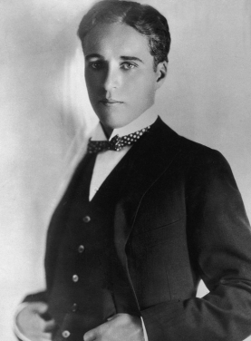
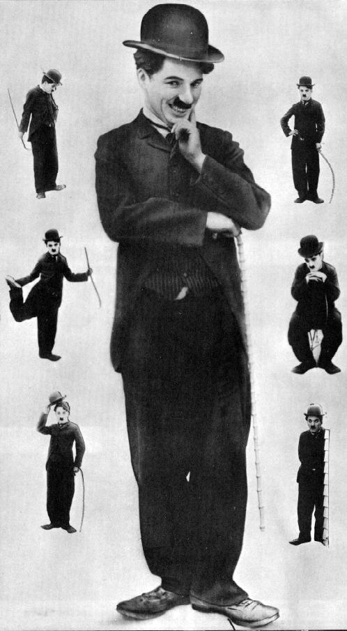
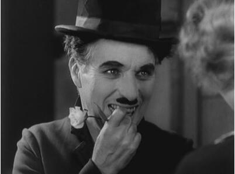
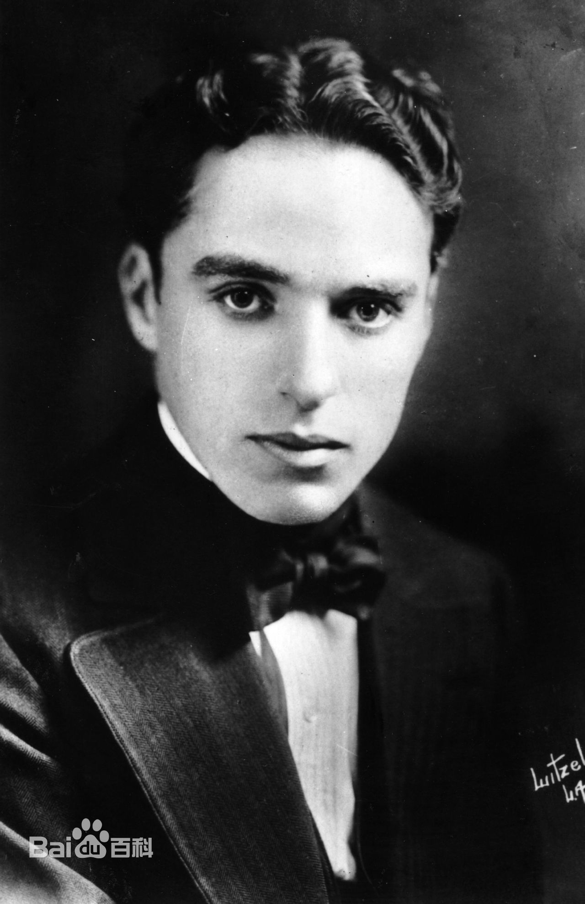
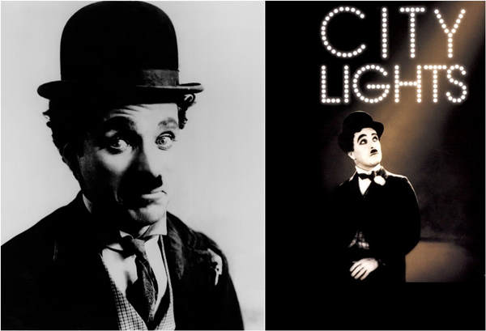
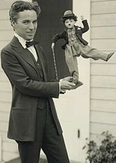
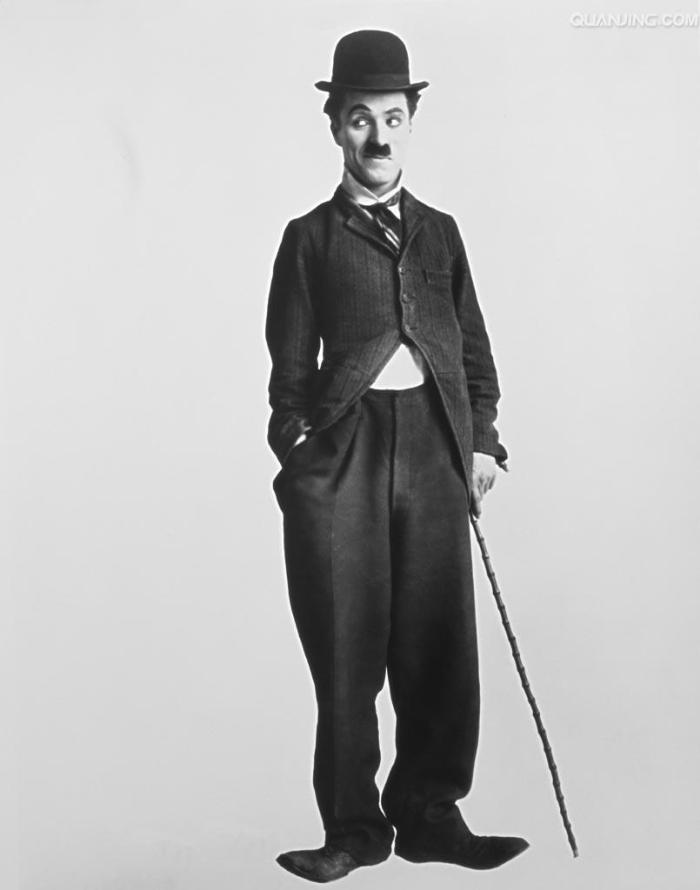
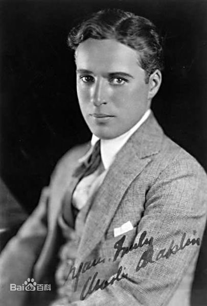

查理·卓别林（Charlie Chaplin，1889年4月16日-1977年12月25日），生于英国伦敦，英国影视演员、导演、编剧。
查理·卓别林的第一部电影是《谋生》。从1915年开始卓别林开始自编自导自演，甚至还担任制片和剪辑。稍后他加入了埃斯安尼公司，并于1917年出品了《移民》和《安乐街》，1918年他和他的兄弟在洛杉矶开了自己的公司。并在1919年召集到了道格拉斯·费尔班克斯等人。但直到1923年，卓别林才为这个公司拍了第一部影片《巴黎一妇人》。之后1925年的《淘金记》和1928年的《马戏团》为卓别林赢得了学院奖。
1931年因为《城市之光》的首映卓别林来到伦敦，转年才返回，他的下一部影片是1936年的《摩登时代》。四年之后他拍摄了《大独裁者》。1952年，他的有声电影《舞台生涯》上映，同年他移居瑞士。1967年他拍摄了最后一部影片《香港女伯爵》，1977年圣诞节于瑞士家中去世，享年88岁。
卓别林自称1889年4月16日出生于下伦敦南沃克区东沃尔沃斯大街，但当地并没有他的确切出生证明文件。从1896年的6月到1898年的1月，少年查理只是汉威尔中心区济贫学校的一名普通常住居民 。1898年的圣诞节，还不满10岁的小查理成为了一名专业的舞台剧演员。由于父亲的职业的关系，他加入了当时的一个少年剧团。在经过数周的训练之后，杰克逊很快选定了剧团表演舞蹈的成员。1900年的圣诞节，这个名叫兰开夏的剧团得到了在舞剧《灰姑娘》中演出厨房中的动物们的机会。在这场戏中，年幼的卓别林装扮成一只猫，并第一次有机会通过表演来引人发笑 。
1901年的春天，查理离开了兰开夏剧团。同年的5月9日，他的父亲去世，年仅37岁，无法再继续对他的幼子提供任何形式的帮助了。 在接下来的两年时间里，小查理做过各种各样的工作：卖花童、理发店小工、医生的小工，还有报童。但他大多数时间是在一个玻璃厂和一家印刷厂里工作。他还曾经在一家私人企业中制做过玩具船。1903年5月，他的哥哥西德尼出海归来，打算凭借他在船上学会的娱乐表演登上舞台。在西德尼的鼓励之下，年仅14岁的查理鼓起勇气向伦敦西区的代理人毛遂自荐，并且很快在一个巡回剧团的剧目《侦探福尔摩斯》中得到了比利-佩吉这个角色。在等待巡回开始前，他在舞台剧《吉姆，安乐乡中的浪漫史》中扮演一个报童。在两年多的时间里他在多家公司的舞台剧中扮演过比利这个角色，在伦敦的公主剧院再次演绎比利这个角色之后。在又一轮的《侦探福尔摩斯》的巡演之后，查理加入到了有西德尼参加的喜剧舞台剧《修复》的表演阵容中。1906年5月，他加入了另一部舞台剧《凯西的宫廷马戏团》并为该剧目表演了一年多。在17岁时，查理已经开始在喜剧剧目中出演主要角色了 。
1908年2月21日，卓别林与英国的杂耍戏院经理弗雷德·卡尔诺（Fred Karno）签了约，又在1910年的9月续了3年的约。查理在卡尔诺的剧目《戴面具的鸟》和《足球队与大胆的吉米》中出演主角 。
1912年9月，他被选中参加卡尔诺剧团在美国的巡回演出。这次巡回从1910年的9月一直持续到1912年的6月。与他一同参加巡演的还有兰开夏剧团的一名年轻喜剧演员史丹利·杰弗逊，也就是后来的斯坦·劳瑞尔。剧团在从纽约到加利福尼亚横跨美国巡演之后，回到欧洲呆了4个月的他迎来了第二次去美国巡演的机会，那是1912年的10月。1913年的春天，卓别林被要求与启斯东电影公司的纽约总公司克塞尔和鲍曼公司联系。双方于1913年的9月23日签订了一年的工作合约 。
1914年，卓别林的处女电影《谋生》上映。之后又拍摄了《20分钟的爱》（Twenty Minutes of Love）和《美宝的婚姻》（Mabel's Married Life）等多部电影。1914年底，卓别林的为期一年的合同到期了。这时候Essanay电影公司以每周1250美元的工资和10000美元的签字费挖走了卓别林 。
在Essanay电影公司，卓别林争取到了更大的自由空间，也遇到了他日后的妻子埃德娜·珀维安斯。《流氓》让他开始用喜剧表现底层人民的生活，《工作》中强烈的讽刺意味让他得到掌声。在这之后的《女人》、《在银行》和《警察》让他在民众中声名大噪。在结束了Essanay电影公司日子之后，电影《查尔斯·卓别林的滑稽戏》和《三重麻烦》未经卓别林的同意，就被擅自播出了，卓别林起诉之后并没有获得法律上的认可[5] 。
1917年6月17日，卓别林与First National Exhibitors Circuit公司签署了被大肆炒作的“百万美元合同”，这家公司将为卓别林独立制作的8部影片每部影片提前支付125000美元。第一部完工的电影是《狗的生活》，随后推出的是1918年的《从军记》、1919年的《光明面》和《快乐的一天》。他还在1921年的《有闲阶级》中扮演了两个角色，一个无聊的有钱人和一位是他替身的流浪汉。在1922年的《发工资的日子》中，他扮演了一位有家的工薪族。在《伪牧师》一片中，他扮演了一位被误认作乡村牧师的逃犯 。
1918年，由于在独立性方面获得了巨大的提升，卓别林建立了自己的制片厂。卓别林在这一期间还进行了一些独立制片活动。他在喜剧记录片《如何制作电影》中展示了他的新制片厂。发行公司拒绝发行这部记录片，这一记录片在七十年后被重新制作才进行了放映。《债券》是卓别林电影制片厂为战争所作的努力，是一部呼吁人们购买战争债券的喜剧片。《教授》一片没能最终完成，但是部分情节紧张的片段得以幸存。《Nice and Friendly》是一部很短的剧情喜剧，拜访卓别林的朋友在剧中作了客串演出[6] 。到1923年，卓别林才为这个公司拍了第一部影片《巴黎一妇人》。
1923年的电影《巴黎一妇人》中，卓别林客串了一名车站搬运工。1925年的《淘金记》和1928年的《马戏团》为卓别林赢得了学院奖。
1931年因为《城市之光》的首映卓别林来到伦敦，转年才返回，他的下一部影片是1936年的《摩登时代》。四年之后他拍摄了《大独裁者》 ，他在片中分别扮演犹太理发师和希特勒。1947年他拍摄了《凡尔杜先生》。
1952年，他的电影《舞台生涯》上映，同年他移居瑞士。1957年的《纽约王》被认为是对这段生活的写照。1967年他拍摄了最后一部影片《香港女伯爵》。英国女王伊丽莎白二世1975年授予已经86岁的卓别林爵士封号。1977年12月25日圣诞节早上，卓别林在其家中睡眠时安然去世，享年88岁
卓别林的父母都是职业歌手。母亲汉娜·哈利特·派德林格汉姆·希尔（Hannah Harriet Pedlingham Hill）是当时地位低下的制靴匠的女儿，她在19岁那年以丽丽-哈利Lily Harley为艺名第一次正式登台；父亲查尔斯·卓别林一世（Charles Chaplin Senior）来自萨克福郡的一个屠户和收税员家庭，24岁在伦敦开始了他的职业歌手生涯 。
卓别林一世和汉娜与1885年6月结婚。当查理一世跟着剧团在美国巡回演出时，汉娜和戏院的另一位演员里奥·德莱登发生了婚外情并生下了一个儿子惠勒·德莱登（Wheeler Dryden）。卓别林一家的幸福家庭生活就此瓦解了。查理一世成了酒鬼，死时年仅37岁。汉娜在赤贫的生活中养育着两个年幼的儿子，直到她自己因为健康的原因倒下为止。严重的精神不稳定使她的身体状况从1898年起就每况愈下，直到最后被关进精神病院。年幼的西德尼和查理在经历了长期的贫困和饥饿之后，一起被送往国立贫民院。后来，西德尼被送往一艘名为埃克斯茅斯的训练舰上，开始接受成为水手的训练。后来西德尼成为了往返于英国和南非的客船上的一名乘务员 。
比卓别林小四岁的海蒂·凯利是一个舞蹈演员，也是卓别林的初恋女友。两人第一次见面时，卓别林是19岁，海蒂·凯利只有15岁，当时凯利是在卓别林之前登台演出，而卓别林对她是一见钟情。不久便向她求婚，但这次被拒绝了。
从1916年到1917年，埃德娜·普文斯不仅主演了卓别林的很多影片，而且成为卓别林的情人。他们的关系到了1918年宣告终结，因为1918年底，卓别林与米尔德丽德·哈里斯结婚了。但直到1923年，普文斯还一直都是卓别林电影的女主角，包括名片《寻子遇仙记》，而一直到1958年她的逝世，卓别林一直都给她发工资。
1918年10月23日，29岁的卓别林迎娶了16岁的童星米尔德丽德·哈里斯。卓别林和哈里斯有一个孩子，名字是诺曼·卓别林，不过，小诺曼在很小的时候就夭折了。到了1920年，卓别林与哈里斯离婚，这桩婚姻才维持了不到两年。
1921年，卓别林拍摄《寻子遇仙记》时第一次遇到丽塔·格雷。三年后，35岁的卓别林在筹备拍摄《淘金热》时再次遇到丽塔·格雷，这时她才16岁，同年，也就是1924年12月26日，卓别林在格雷怀孕后与她结婚。两人生了两个小孩，一个是出生于1925年，直接促成这段婚姻，后来也成为演员的小查理·卓别林，另一个晚一年出生，叫西德尼·厄尔·卓别林。到了1928年，两人终于离婚，而卓别林为此支付了82万5千美元的赡养费。
从1932年到1940年，卓别林与女演员保利特·戈达德保持着一种特殊关系，在生活上，两人是伴侣，在工作上，两人是搭档。在这八年的大部分时间里，保利特-戈达德都住在卓别林在好莱坞贝弗利山的家里。到了1940年，两人关系结束时，才出来共同发表声明，说两人在1936年已经秘密结婚。两人的事实婚姻1942年在友善中结束。
卓别林与琼·拜瑞成为情人是在1942年，当时，卓别林选定她在自己即将拍摄的一部里担任主演。后来，当拜瑞严重的心理问题表现得越来越明显，让卓别林难以忍受，之后两人分手了。1943年，拜瑞在生下了一个孩子之后，向法庭起诉了卓别林。虽然血检证实那不是卓别林的孩子，但在当时，法庭不把血检结果当作有效力的证据，最终，法庭判卓别林对这个孩子负有抚养的义务。第二年，加利福尼亚州通过了一项法律，承认血检可以作为证据。联邦检察官据此撤销了对卓别林的指控。
与琼·拜瑞的法律纠纷还在进行中之时，卓别林认识了剧作家尤金·奥尼尔的女儿：乌娜·奥尼尔。1943年6月16日，卓别林把乌娜娶回了家，当时，卓别林是54岁，而乌娜只有18岁。对此，尤金·奥尼尔极为恼火，在两人结婚后断绝了与女儿的来往，直到死都没有改变这一决定。卓别林和乌娜一起生了八个孩子，其中有五个女儿，三个儿子。乌娜比卓别林多活了14年，她于1991年死于胰腺癌。
肥裤子、破礼帽、小胡子、大头鞋，再加上一根从来都不舍得离手的拐杖，卓别林用他的表情和动作将美国默片带到最高峰（《新世纪周刊》评）。
从他的首部电影开始，卓别林对社会底层人物的真实描绘吸引了左翼知识分子，但与此同时，这在保守的美国引发了右翼人士的警觉。联邦调查局早就1923年初就开始记录有关他的活动和他助手的档案。长期担任联邦调查局局长的埃德加·胡佛视他是一个特别目标，指派特工们对他进行了多年的跟踪和监视，但却未发现卓别林支持美国共产党的任何证据。麦卡锡主义者用他在二战时期的爱国行为，特别是他当时发表支持美国当时盟国苏联的讲演来指控他，右翼记者被指使发动针对他的行动，联邦调查局还在幕后操纵精神错乱的女演员琼·巴里指控卓别林是她孩子的父亲。美国军团等右翼组织立刻投入了打压卓别林的活动，放映卓别林电影的影院被封锁，好莱坞没有人再敢与卓别林和他的家人有任何联系。非美活动调查委员会曾考虑让他出庭作证，但是后来打消了这一想法。1952年9月17日，卓别林和他的妻子乌娜·奥尼尔、四个孩子乘坐“伊丽莎白女王号”驶往伦敦参加《舞台生涯》的伦敦全球首映式。当船只在海上航行两天后，美国司法部长宣布，卓别林的入境签证已被取销，因为卓别林是一名外国人（他保留了他的英国国籍）。
